Snakes of Angola
142 snake species are recorded in Angola in SnakeList: 54 venomous and 88 non-venomous, from 12 families.
- 142species
- 54venomous
- 88non-venomous
- 12families
Species
Showing 142 species
- No photo yetAfrican Bighead SnakeHypoptophis wilsonii
 African Bush ViperAtheris squamigera
African Bush ViperAtheris squamigera African Rock PythonPython sebae
African Rock PythonPython sebae African Shovel-nosed SnakeScaphiophis albopunctatus
African Shovel-nosed SnakeScaphiophis albopunctatus African Tree CobraPseudohaje goldii
African Tree CobraPseudohaje goldii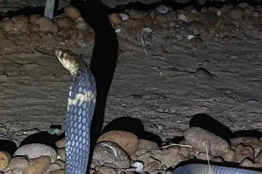
Anchieta's CobraNaja anchietae Angola blind snakeAfrotyphlops angolensis
Angola blind snakeAfrotyphlops angolensis- No photo yetAngola File SnakeLimaformosa vernayi
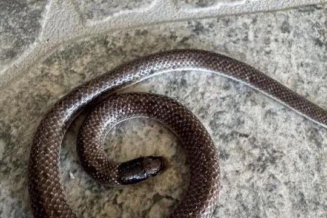
Angola Shovel-snoutProsymna angolensis- No photo yetAngolan AdderBitis heraldica
 Angolan Garter SnakeElapsoidea semiannulata
Angolan Garter SnakeElapsoidea semiannulata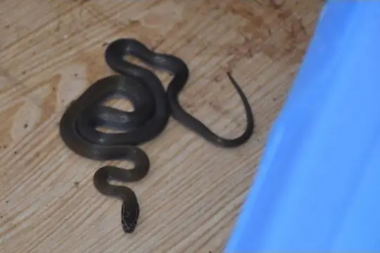
Angolan House SnakeBoaedon angolensis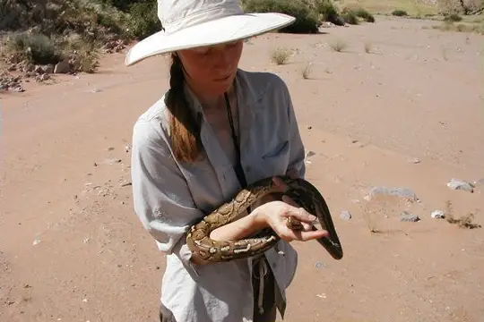
Angolan PythonPython anchietae Angolan Shovel-snoutProsymna ambigua
Angolan Shovel-snoutProsymna ambigua- No photo yetAnomalous Beaked SnakeAfrotyphlops anomalus
 Bangweulu Water SnakeLimnophis bangweolicus
Bangweulu Water SnakeLimnophis bangweolicus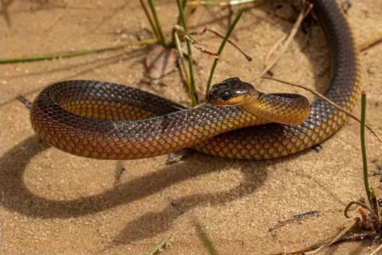
Barotse Water SnakeCrotaphopeltis barotseensis Beaked SkaapstekerKladirostratus acutus
Beaked SkaapstekerKladirostratus acutus- No photo yetBenguela Worm SnakeNamibiana latifrons
 Bibron's Burrowing AspAtractaspis bibronii
Bibron's Burrowing AspAtractaspis bibronii Bicolored Swamp SnakeLimnophis bicolor
Bicolored Swamp SnakeLimnophis bicolor Black MambaDendroaspis polylepis
Black MambaDendroaspis polylepis Black-necked Spitting CobraNaja nigricollis
Black-necked Spitting CobraNaja nigricollis Blandings Tree SnakeToxicodryas blandingii
Blandings Tree SnakeToxicodryas blandingii Blotched Blind SnakeAfrotyphlops congestus
Blotched Blind SnakeAfrotyphlops congestus- No photo yetBocage's Blind SnakeNamibiana rostrata
 Bocage’s Brown House SnakeBoaedon bocagei
Bocage’s Brown House SnakeBoaedon bocagei BoomslangDispholidus typus
BoomslangDispholidus typus Boulenger's Mole ViperAtractaspis boulengeri
Boulenger's Mole ViperAtractaspis boulengeri- No photo yetBranch’s Brown House SnakeBoaedon branchi
 Brown Forest CobraNaja subfulva
Brown Forest CobraNaja subfulva Brown House Snake (fuliginosus)Boaedon fuliginosus
Brown House Snake (fuliginosus)Boaedon fuliginosus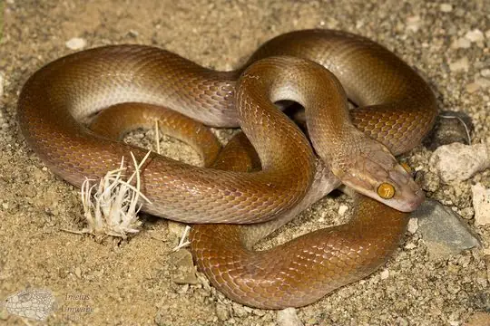
Bug-eyed House SnakeBoaedon mentalis- No photo yetCaesar's African Water SnakeGrayia caesar
 Calabar Ground PythonCalabaria reinhardtii
Calabar Ground PythonCalabaria reinhardtii Cape Wolf Snake (multimaculatum)Lycophidion multimaculatum
Cape Wolf Snake (multimaculatum)Lycophidion multimaculatum Collared Snake-eaterPolemon collaris
Collared Snake-eaterPolemon collaris Common Egg EaterDasypeltis scabra
Common Egg EaterDasypeltis scabra Common File SnakeLimaformosa capensis
Common File SnakeLimaformosa capensis Common Night AdderCausus rhombeatus
Common Night AdderCausus rhombeatus Common Purple-glossed SnakeAmblyodipsas polylepis
Common Purple-glossed SnakeAmblyodipsas polylepis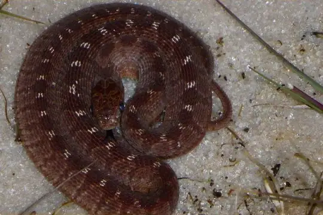
Confusing Egg EaterDasypeltis confusa Congo Burrowing AspAtractaspis congica
Congo Burrowing AspAtractaspis congica Congo File SnakeLimaformosa savorgnani
Congo File SnakeLimaformosa savorgnani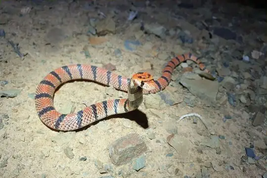
Coral Shield CobraAspidelaps lubricus- No photo yetCunene RacerMopanveldophis zebrinus
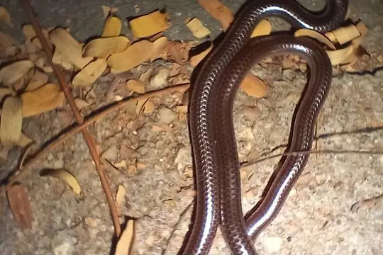
Damara Thread SnakeNamibiana labialis- No photo yetDamara Tiger SnakeTelescopus finkeldeyi
- No photo yetDark-bellied HousesnakeBoaedon variegatus
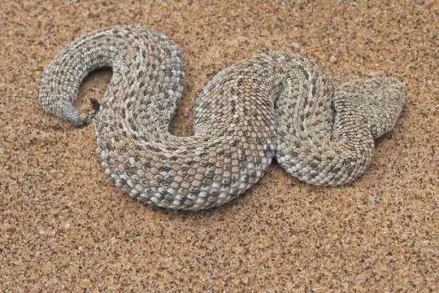
Dwarf Puff AdderBitis peringueyi Dwarf Sand SnakePsammophis angolensis
Dwarf Sand SnakePsammophis angolensis Elongate Quill-snouted SnakeXenocalamus mechowii
Elongate Quill-snouted SnakeXenocalamus mechowii Emerald Green SnakePhilothamnus heterodermus
Emerald Green SnakePhilothamnus heterodermus Emerald SnakeHapsidophrys smaragdinus
Emerald SnakeHapsidophrys smaragdinus Equatorial File SnakeMehelya poensis
Equatorial File SnakeMehelya poensis Fierce Night StalkerToxicodryas vexator
Fierce Night StalkerToxicodryas vexator Fischer's Cat SnakeToxicodryas pulverulenta
Fischer's Cat SnakeToxicodryas pulverulenta Flat Wolf SnakeLycophidion laterale
Flat Wolf SnakeLycophidion laterale Forest CobraNaja melanoleuca
Forest CobraNaja melanoleuca Forest Night AdderCausus lichtensteinii
Forest Night AdderCausus lichtensteinii Frade’s Brown House SnakeBoaedon fradei
Frade’s Brown House SnakeBoaedon fradei Gaboon ViperBitis gabonica
Gaboon ViperBitis gabonica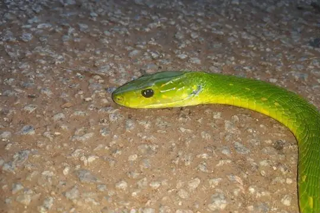
Green MambaDendroaspis angusticeps Green Night AdderCausus resimus
Green Night AdderCausus resimus Green Water SnakePhilothamnus hoplogaster
Green Water SnakePhilothamnus hoplogaster Günther’s Garter SnakeElapsoidea guentherii
Günther’s Garter SnakeElapsoidea guentherii- No photo yetHellmich's Wolf SnakeLycophidion hellmichi
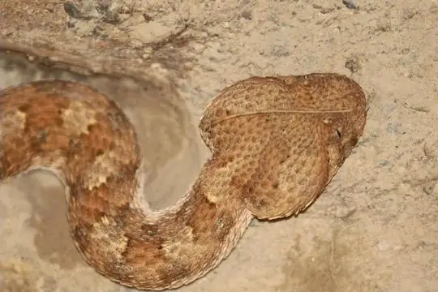
Horned AdderBitis caudalis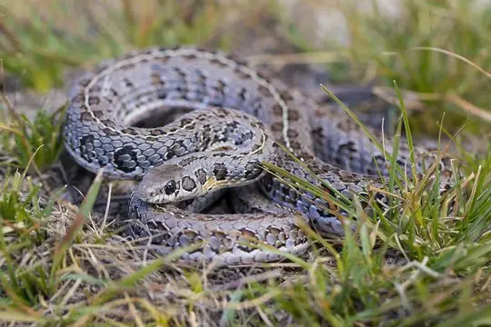
Huíla SkaapstekerPsammophylax ocellatus Irregular Green SnakePhilothamnus irregularis
Irregular Green SnakePhilothamnus irregularis Jackson's Black Tree SnakeThrasops jacksonii
Jackson's Black Tree SnakeThrasops jacksonii Jalla's Sand SnakePsammophis jallae
Jalla's Sand SnakePsammophis jallae Jameson's MambaDendroaspis jamesoni
Jameson's MambaDendroaspis jamesoni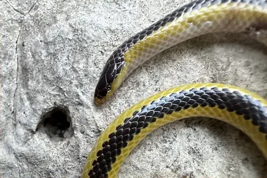
Kalahari Purple-glossed SnakeAmblyodipsas ventrimaculata Kirtland's Twig SnakeThelotornis kirtlandii
Kirtland's Twig SnakeThelotornis kirtlandii- No photo yetLagoa Carumbo Swamp SnakeLimnophis branchi
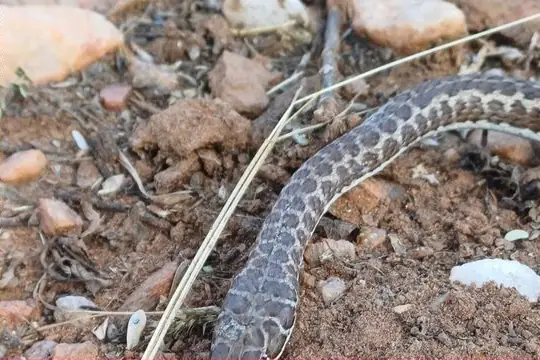
Leopard Sand SnakePsammophis leopardinus Lesser African PythonPython natalensis
Lesser African PythonPython natalensis Lined Olympic SnakePsammophis lineatus
Lined Olympic SnakePsammophis lineatus- No photo yetLined Water SnakeLycodonomorphus subtaeniatus
 Lineolate Blind SnakeAfrotyphlops lineolatus
Lineolate Blind SnakeAfrotyphlops lineolatus- No photo yetLink-marked Sand RacerPsammophis ansorgii
- No photo yetLéopoldville Beaked SnakeLetheobia praeocularis
- No photo yetMany-banded SnakeNaja multifasciata
 Mocquard's African Ground SnakeGonionotophis brussauxi
Mocquard's African Ground SnakeGonionotophis brussauxi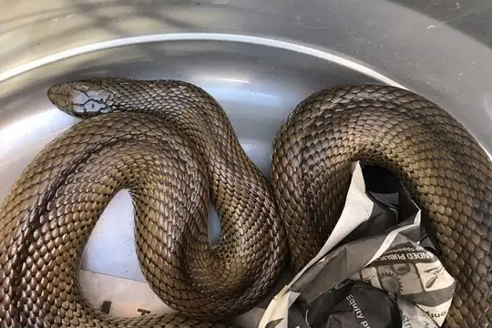
Mole SnakePseudaspis cana Mopane SnakeHemirhagerrhis nototaenia
Mopane SnakeHemirhagerrhis nototaenia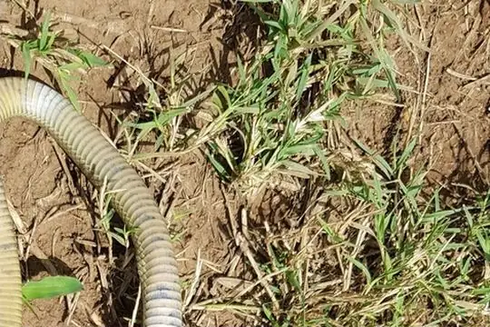
Mozambique Spitting CobraNaja mossambica- No photo yetNamib Sand SnakePsammophis namibensis
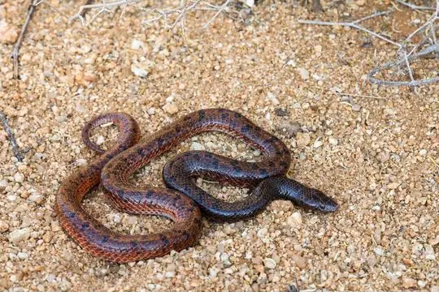
Namibian Wolf SnakeLycophidion namibianum Olive Grass RacerPsammophis phillipsii
Olive Grass RacerPsammophis phillipsii Olive House Snake (olivaceus)Boaedon olivaceus
Olive House Snake (olivaceus)Boaedon olivaceus Olive Marsh SnakeNatriciteres olivacea
Olive Marsh SnakeNatriciteres olivacea Olive Whip SnakePsammophis mossambicus
Olive Whip SnakePsammophis mossambicus Ornate African Water SnakeGrayia ornata
Ornate African Water SnakeGrayia ornata Ornate Green SnakePhilothamnus ornatus
Ornate Green SnakePhilothamnus ornatus Ornate Wolf SnakeLycophidion ornatum
Ornate Wolf SnakeLycophidion ornatum Palm Egg EaterDasypeltis palmarum
Palm Egg EaterDasypeltis palmarum- No photo yetParker's Banded SnakeChamaelycus parkeri
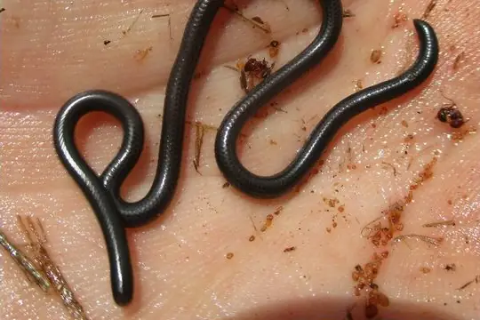
Peter's Thread SnakeLeptotyphlops scutifrons- No photo yetPlain Shovel-snout Snake (confusa)Prosymna confusa
- No photo yetPlain Shovel-snout Snake (lisima)Prosymna lisima
 Puff AdderBitis arietans
Puff AdderBitis arietans- No photo yetRasmussen’s Night AdderCausus rasmusseni
 Red-Black Striped SnakeBothrophthalmus lineatus
Red-Black Striped SnakeBothrophthalmus lineatus Red-lipped SnakeCrotaphopeltis hotamboeia
Red-lipped SnakeCrotaphopeltis hotamboeia Rhinoceros Viper (nasicornis)Bitis nasicornis
Rhinoceros Viper (nasicornis)Bitis nasicornis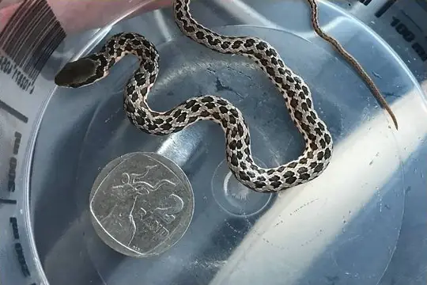
Rhombic SkaapstekerPsammophylax rhombeatus Ringed Water CobraNaja annulata
Ringed Water CobraNaja annulata Schlegel's Giant Blind SnakeAfrotyphlops schlegelii
Schlegel's Giant Blind SnakeAfrotyphlops schlegelii Schmidt's blind-snakeAfrotyphlops schmidti
Schmidt's blind-snakeAfrotyphlops schmidti Shaba Thread SnakeLeptotyphlops kafubi
Shaba Thread SnakeLeptotyphlops kafubi Shreve's Tree SnakeDipsadoboa shrevei
Shreve's Tree SnakeDipsadoboa shrevei Slender Green SnakePhilothamnus heterolepidotus
Slender Green SnakePhilothamnus heterolepidotus Slender Quill-snouted SnakeXenocalamus bicolor
Slender Quill-snouted SnakeXenocalamus bicolor Smith's African Water SnakeGrayia smithii
Smith's African Water SnakeGrayia smithii- No photo yetSouthwestern Forest Marsh SnakeNatriciteres bipostocularis
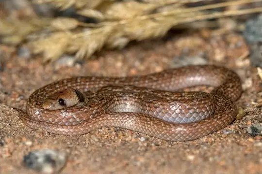
Southwestern Shovel-snoutProsymna frontalis Speckled Wolf SnakeLycophidion meleagre
Speckled Wolf SnakeLycophidion meleagre Spotted Bush SnakePhilothamnus semivariegatus
Spotted Bush SnakePhilothamnus semivariegatus Spotted Night AdderCausus maculatus
Spotted Night AdderCausus maculatus Stripe-bellied Sand SnakePsammophis subtaeniatus
Stripe-bellied Sand SnakePsammophis subtaeniatus Striped Sand SnakePsammophis sibilans
Striped Sand SnakePsammophis sibilans Striped SkaapstekerPsammophylax tritaeniatus
Striped SkaapstekerPsammophylax tritaeniatus Striped Wood SnakePhilothamnus dorsalis
Striped Wood SnakePhilothamnus dorsalis Thirteen-scaled Green SnakePhilothamnus carinatus
Thirteen-scaled Green SnakePhilothamnus carinatus Tholloni's African Water SnakeGrayia tholloni
Tholloni's African Water SnakeGrayia tholloni Tiger Cat SnakeTelescopus semiannulatus
Tiger Cat SnakeTelescopus semiannulatus Twig SnakeThelotornis capensis
Twig SnakeThelotornis capensis Two-lined Night AdderCausus bilineatus
Two-lined Night AdderCausus bilineatus Uganda House SnakeHormonotus modestus
Uganda House SnakeHormonotus modestus Variable Burrowing AspAtractaspis irregularis
Variable Burrowing AspAtractaspis irregularis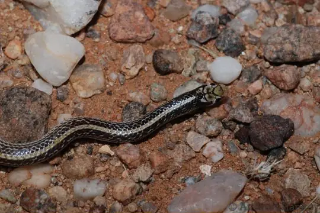
Visser's Shovel-snoutProsymna visseri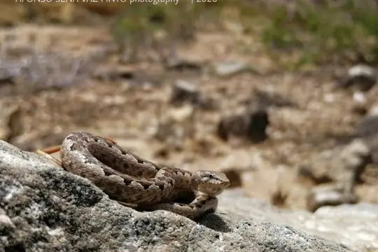
Western Bark SnakeHemirhagerrhis viperina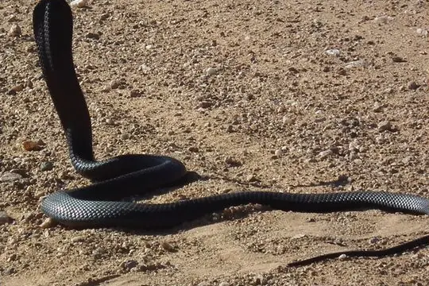
Western Barred Spitting CobraNaja nigricincta Western Green SnakePhilothamnus angolensis
Western Green SnakePhilothamnus angolensis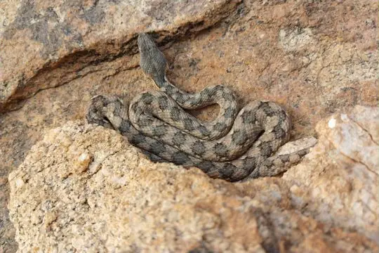
Western Keeled SnakePythonodipsas carinata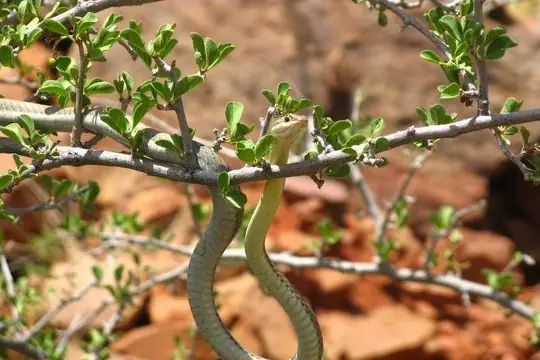
Western Sand SnakePsammophis trigrammus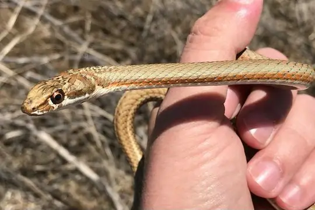
Whip SnakePsammophis notostictus Zambian Whip SnakePsammophis zambiensis
Zambian Whip SnakePsammophis zambiensis Boaedon mendesi
Boaedon mendesi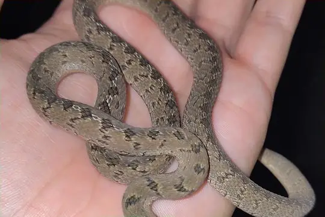
Dasypeltis congolensis
No snakes in Angola match.
Angola’s snakes in numbers
- Families: Colubridae 37, Lamprophiidae 24, Psammophiidae 19, Elapidae 15, Viperidae 13, Atractaspididae 10, Typhlopidae 7, Prosymnidae 6, Leptotyphlopidae 5, Pythonidae 3, Pseudaspididae 2, Boidae 1.
- 7 are recorded in no other country in SnakeList: Angolan Adder, Anomalous Beaked Snake, Benguela Worm Snake, Bocage's Blind Snake, Lagoa Carumbo Swamp Snake, Link-marked Sand Racer, Plain Shovel-snout Snake (confusa).